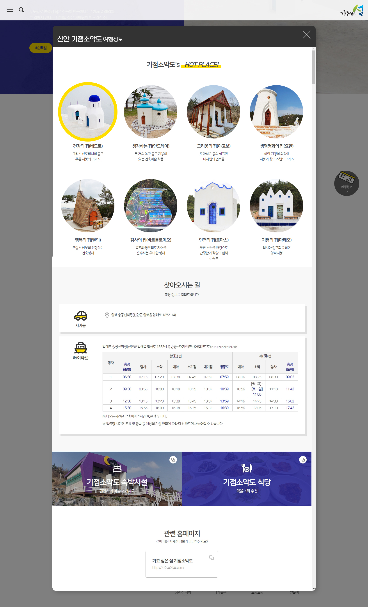
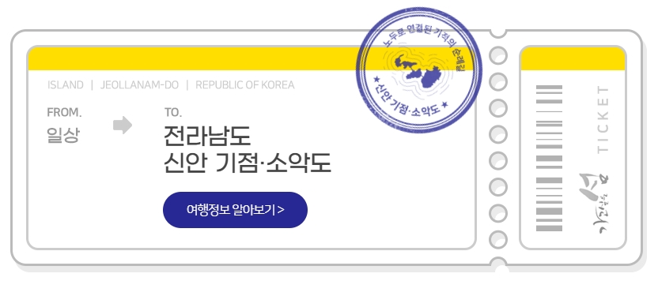
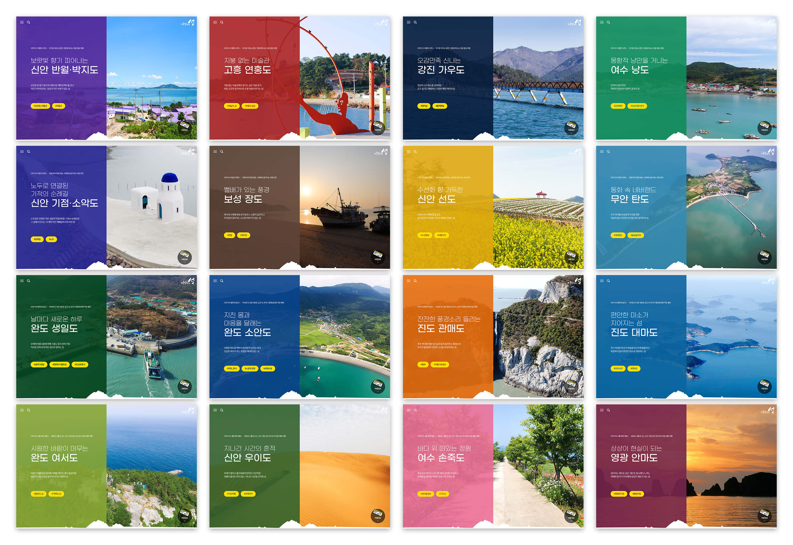

메인

섬 상세페이지

여행정보

섬투어 티켓

16개 섬 테마 비주얼

개요
기존에 각 섬마다 운영중이던 사이트를 통합한 섬 여행정보 웹사이트입니다. 16개 섬 정보를 제공하고 관심을 갖게 하며 최종적으로 섬 방문까지 이어지는 것을 목표로 두고 기획되었습니다.
16개 섬이 저마다 다양한 매력이 있음을 보여주기 위해서 섬마다 컬러를 부여하였고 상세페이지내 테마 컬러로 사용되었습니다. 클라이언트가 제시한 4개의 테마도 전라남도청 로고 컬러에서 추출한 4가지 색상을 부여했으며 메인에서 나타내었습니다.
16개 섬 상세페이지는 모두 다른 분위기를 가지되 일관성 있도록 구성하기 위해 노력했습니다. 풀페이지 사이즈, 2열 배치, 1열 배치 등 여러 모듈을 조합한 형태로 디자인되었습니다.
여행안내서를 펼쳐보는 느낌으로 편집디자인적인 요소를 가미하였으며 티켓 요소를 추가하여 유저의 흥미를 유도했습니다. 티켓은 여행정보를 읽고나면 각 섬의 도장이 찍히는 애니메이션이 재생되는 요소인데 아날로그적 감성을 더함과 동시에 이후 확장사업을 염두에 두고 제작했습니다.